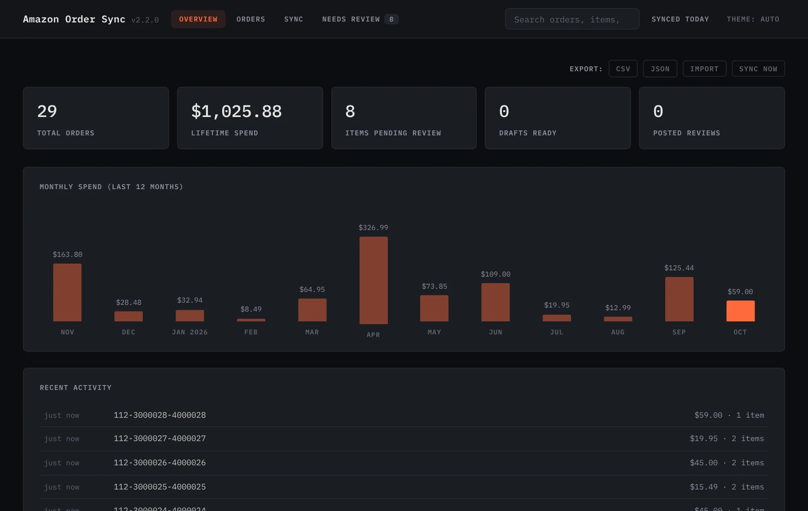
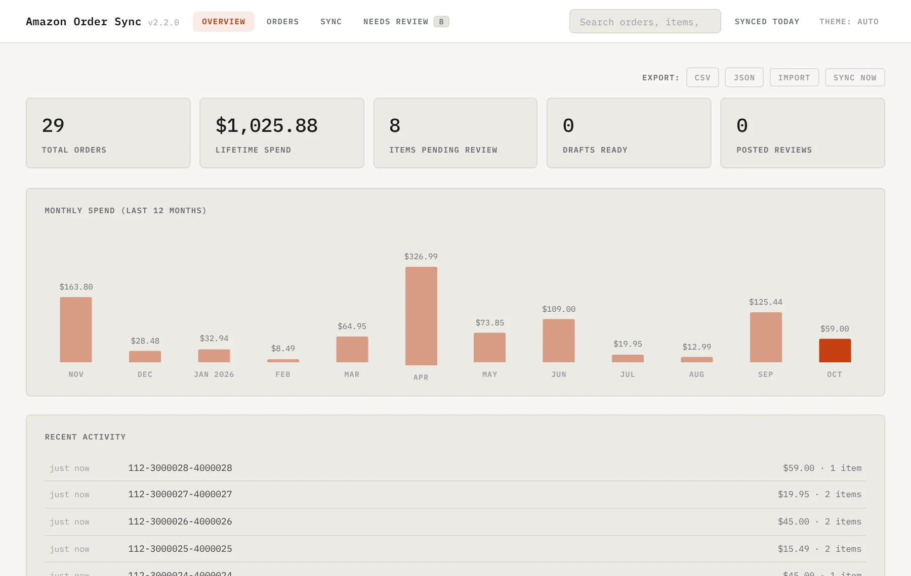
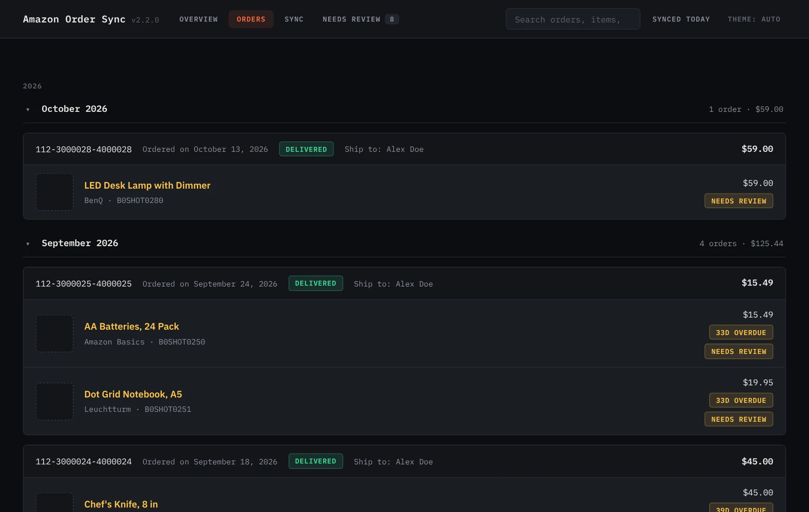
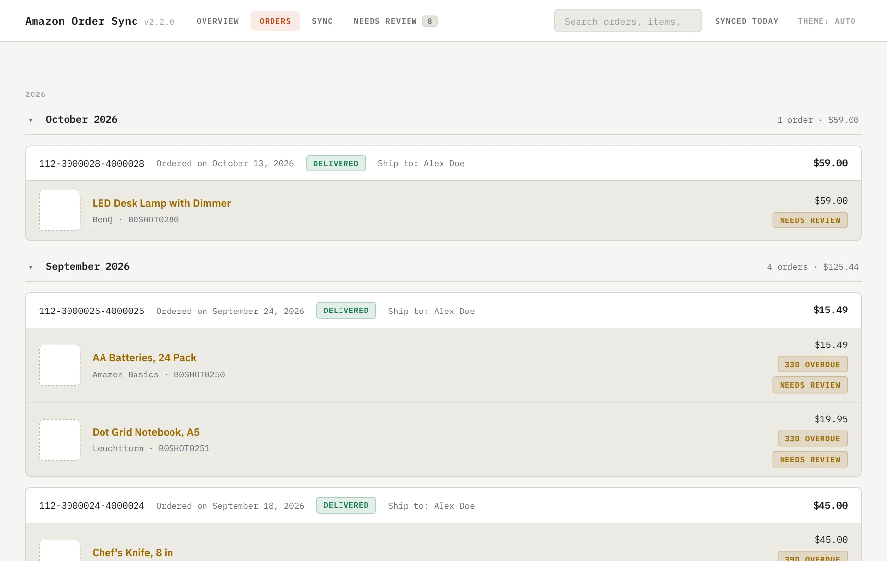

Node.js 18+ · Brave, Edge, Chromium · Windows and Linux
Syncs your Amazon orders into local Markdown notes
Amazon's order history is a slow, paged website. This keeps a copy as plain Markdown files, one per order, with the product images next to them, so you can search, chart and keep it without Amazon. Everything runs on your computer.
$zip = "$env:TEMP\amazon-order-sync-windows.zip"
Invoke-WebRequest https://github.com/Real-Fruit-Snacks/amazon-order-sync/releases/latest/download/amazon-order-sync-windows.zip -OutFile $zip
Expand-Archive $zip "$env:LOCALAPPDATA\Programs\amazon-order-sync" -Force
Set-ExecutionPolicy -Scope Process Bypass; & "$env:LOCALAPPDATA\Programs\amazon-order-sync\install.ps1"curl -fsSL https://github.com/Real-Fruit-Snacks/amazon-order-sync/releases/latest/download/amazon-order-sync-linux.tar.gz | tar xz && ./amazon-order-sync/install.shbrave://extensions → Developer mode → Load unpacked → the browser-extension folder the installer prints. Open your Amazon order history and press Sync Current Page.

What's in it
One Node.js file with no npm dependencies, on 127.0.0.1:27483. Writes one note per order under Orders/YYYY/MM-Month/, saves product images next to them, and serves the dashboard.
Reads your Amazon order pages and sends them to the server. Sync Current Page or Auto-Sync All Pages from its popup. Runs only on Amazon order and review pages.
Spend by month, every order searchable, price drops on things you bought, repeat purchases, and CSV or JSON export of the lot. Import your full history from Amazon's "Request My Data" export.
After a one-time login, the server can run your browser headless with the real extension on a schedule. No cookie scraping, and no browser window.
Starts the server hidden, shows notifications, and has a menu for sync, login, the notes folder, the config and the logs. Start with Windows is a checkbox. On Linux, a systemd user service does the same job.
Each item has a review section in its note. With an optional Gemini key the server drafts one for you to rewrite in your own words; the extension fills Amazon's form with what you saved, and you post it yourself.
Screens


/ to search. Screens show made-up orders.The notes
Readable in any editor or Obsidian vault. Re-syncing never overwrites text you wrote or a box you ticked.
---
type: order
order_id: "112-3000028-4000028"
date: "Ordered on October 13, 2026"
total: "$59.00"
status: "Delivered"
brand: ["BenQ"]
asin: ["B0SHOT0280"]
reviewed: [false]
---
# Order 112-3000028-4000028
### LED Desk Lamp with Dimmer

#### My Review
> *Write your review for this item below...*
**Rating:**
**Review:**
- [ ] Posted to Amazon?Privacy
Unless you add a Gemini key. Then, for each draft, it sends that product's name, brand and listing features, up to three public reviews of it, and up to three of your own posted reviews as style samples. Never your order numbers, prices or address.
127.0.0.1 and refuses any request not addressed to 127.0.0.1 or localhost, which stops DNS rebinding.403.Configuration
config.json%APPDATA%\amazon-order-sync\ on Windows, ~/.config/amazon-order-sync/ on Linux. The installer creates it and never overwrites it. Every key is in the guide.
| Key | Default |
|---|---|
| notesPath | ~/AmazonOrders |
| port | 27483; the extension expects it |
| autoSyncEnabled | false; headless sync every autoSyncIntervalHours (24) |
| browserPath | autodetect: Brave, Edge and Chromium before Chrome |
| geminiApiKey | empty; turns on review drafts |
Tested on
Known issues
--load-extension since version 137, so headless sync needs Brave, Edge or Chromium. Manual sync works in Chrome.--- line inside a review when editing a note by hand; it separates items.